Code
# read libraries
library(raster)
library(terra)
library(ggplot2)
library(tmap)
library(sf)
library(dplyr)
library(tibble)
library(knitr)
library(webshot2)
library(plotly)
library(geodata)
library(stringr)This study was conducted in four areas of Cochabamba’s Valle Alto region: Aiquile, Pasorapa, Pojo, and Totoro. These areas are known for their vast farmlands that produce a variety of crops.
Mountain water sources are vital for irrigation in these and other areas. However, there have been disputes over water rights within and between these areas. Changes in climate patterns have led to concerns about water security, causing extended periods of water shortage.
The goal of this study is to develop a method to identify potential weather risks like drought, frost, and flood, Taking into account the distinctive physical and social attributes of the four states within the Bolivian high valley region. The findings are intended to support risk prevention policies in all four areas.
This study uses a cost-effective, scientific, and adaptable approach to different situations. It combines detailed physical aspects, and aims to influencing decisions about land and natural resource management. This method could potentially be used in other regions and nationally.
Drought is a weather event that happens when there’s less rainfall than average over a period, causing a significant and long-lasting water shortage that affects human activities. Droughts, which are becoming more common worldwide, are among the most economically damaging natural events, leading to the loss of large areas of crops and the death of many livestock.
Risk is the result of the dynamic relationship between threats and vulnerabilities within a society or its specific components. It’s calculated using the following equation: Risk depends on the likelihood of hazardous events happening and the presence of a vulnerable population exposed to the threat. This means that if there’s no threat, there’s no risk, or if the population isn’t vulnerable, the risk is zero.
Risk predicts the probability of future disasters, indicating the potential future damage and losses associated with the impact of an external physical event on a vulnerable society, exceeding the society’s ability to recover from such impacts on its own.
Disasters happen because of unmanaged risks. Therefore, it’s important for areas to establish risk management policies and create planning bodies like a “Risk Management Unit,” equipped with planning tools and instruments. Risk maps are important tools for land planning that greatly help with risk management.
A group of development workers known as the Equipo Cono Sur, from the NGO Agrecol Andes, are focused on helping communities and governments in the Cochabamba’s Valle Alto region: including special efforts in Aiquile, Pasorapa, Pojo, and Totoro prepare for future challenges such as droughts, frosts, and floods. They aim to adapt local residents and governments to these risks.
Additionally, they recently conducted a case study on Recharge Zones (called “Zonas de Recarga Hídrica” in Spanish) using a similar professional approach as this Multicriteria Analysis Case Study. This Document can been viewed here: Multicriterianalysis Recarga Hídrica (2023).
# read libraries
library(raster)
library(terra)
library(ggplot2)
library(tmap)
library(sf)
library(dplyr)
library(tibble)
library(knitr)
library(webshot2)
library(plotly)
library(geodata)
library(stringr)bol <- read_sf("gadm41_BOL_3.shp", crs = 4326) # Pasorapa extent
# pop <- rast("gpw_v4_population_count_rev11_2020_2pt5_min.tif")
# river data
# river <- read_sf("HydroRIVERS_v10_sa.shp")
## raster
# dem <- rast("s20w070_dem.tif")
## Land use # (only 11 classes)
# land <- read_sf("cob_uso.shp")
# Data from Tito (only 3 classes)
# land_new <- rast("uso_suelo.tif")
# land_filter <- land %>% filter(!USO %in% c("Recreativo: Escénico, Turístico", "Productivo Aguas Superficiales Mixto: Generación de energía eléctrica Agua para riego, Pesca, Captación de Agua potable, Transporte Fluvial", "Extractivo Minero en parte: Explotación de yacimientos mineros; Por sectores escaso pastoreo directo", "Productivo Aguas Superficiales Mixto: Generación de energía eléctrica Agua para riego, Pesca, Captación de Agua potable, Transporte Fluvial", "Extractivo Minero, Productivo Agropecuario, Protectivo, Vida silvestre", "Productivo Agropecuario, Extractivo Forestal y Petrolero: Cultivos Alimenticios, Pastoreo directo por sectores, Productos Maderables y no Maderables, Extracción de Combustibles fósiles", "Productivo Agropecuario, Extractivo Forestal: Pastoreo, Ramoneo, Cultivos alimenticios en algunos sectores, Extracción de Leña en parte")) # select municipalities
cocha <- bol %>% filter(NAME_1 == "Cochabamba")
# filter der bol shapes Aiquile
Pasorapa <- cocha %>% filter(NAME_3 == "Pasorapa")
Aiquile <- cocha %>% filter(NAME_3 == "Aiquile")
# new
totora <- cocha %>% filter(NAME_3 == "Totora")
pojo <- cocha %>% filter(NAME_3 == "Pojo")
# read bol_1.shp and Cochabamba.shp
bol_1 <- read_sf("bol_1.shp")
Cochabamba <- read_sf("Cochabamba.shp")
# plot first map
tm_shape(bol_1) +
tm_polygons(alpha = 0.2) +
tm_borders(lwd = 2,) +
tm_layout(frame = FALSE) +
tm_shape(Cochabamba) +
tm_borders(lwd = 2, col = "red") +
tm_text("NAME_1", size = 0.7) +
tm_scale_bar(breaks = c(0, 100, 250), text.size = 0.9, position = c("right")) +
tm_compass(type = "4star", size = 6, position = c("right", "top")) +
tm_credits("Data source: gdm.org", fontface = "italic", align = "center") + tm_graticules(alpha = 0.3) +
tm_layout(
legend.text.size = 1,
legend.position = c("left", "bottom"),
legend.outside = TRUE
)
# cocha is an sf object containing the extent you want to highlight
# Main map with transparent extent of cocha
main_map <- tm_shape(cocha) +
tm_sf(alpha = 0.2) # Adjust alpha for transparency
# Additional maps for municipalities
municipality_maps <- tm_shape(Pasorapa) +
tm_sf() +
tm_shape(Aiquile) +
tm_sf() +
tm_shape(totora) +
tm_sf() +
tm_shape(pojo) +
tm_sf()
# Combine all municipalities into a single sf object
all_municipalities <- rbind(Pasorapa, Aiquile, totora, pojo)
# Minimap with labels
minimap <- tm_shape(all_municipalities) +
tm_borders(lwd = 2, col = "red") +
tm_layout(frame = FALSE) +
tm_text("NAME_3", size = 0.7) +
tm_scale_bar(breaks = c(0, 25, 50), text.size = 0.9, position = c("left")) +
tm_graticules(alpha = 0.3) +
tm_layout(
legend.text.size = 1,
legend.position = c("left", "bottom"),
legend.outside = TRUE
)
# Combine all maps
final_map <- main_map + minimap
# Plot the map
final_map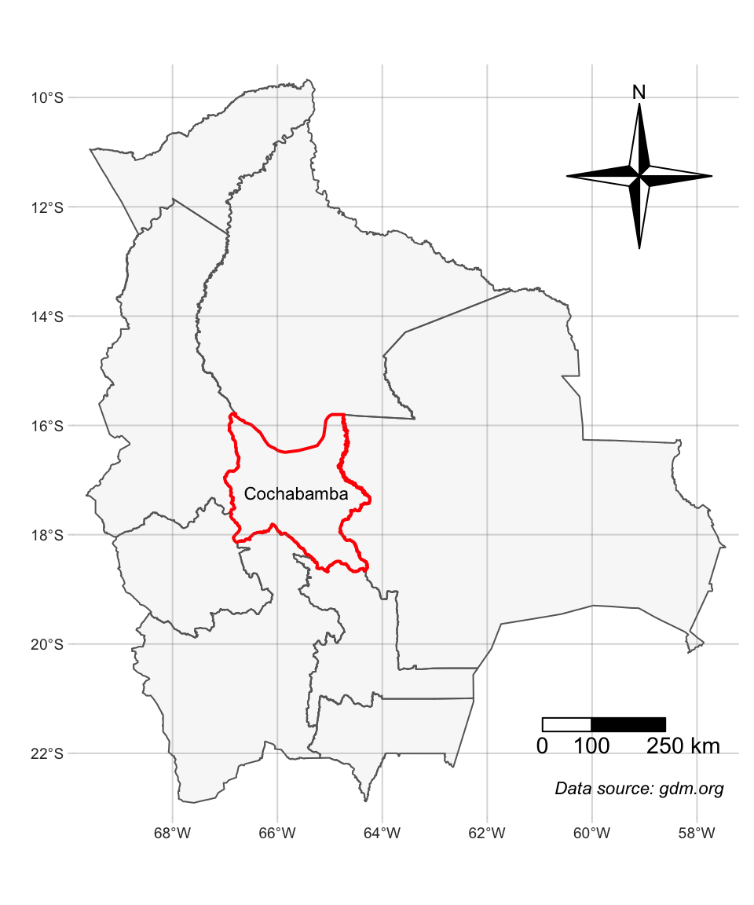
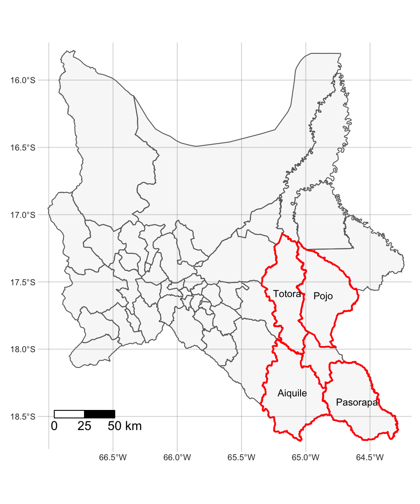
## Literature Review
# Table 1: Publications Analysis
publications <- data.frame(
Source = c(
"[European Drought Risk Atlas](https://joint-research-centre.ec.europa.eu/jrc-news-and-updates/drought-risk-atlas-heightened-risk-threatens-environment-and-economy-2023-10-11_en)",
"[Arabian Journal of Geosciences](https://link.springer.com/article/10.1007/s12517-012-0707-2)",
"[MDPI](https://www.mdpi.com/2073-445X/12/6/1184)",
"[Drought Risk Atlas](https://www.drought.gov/data-maps-tools/drought-risk-atlas)",
"[MDPI](https://www.mdpi.com/2073-4441/12/7/1862)"
),
Description = c(
"Comprehensive assessment and mapping of drought risks and impacts in the EU for 1.5, 2, and 3 degrees of global warming.",
"Study on 'Drought risk assessment using remote sensing and GIS techniques'.",
"Agricultural Drought Risk Assessment model considering exposure, hazard, vulnerability, and mitigation capacity.",
"The Drought Risk Atlas provides historical drought data until 2017 for US weather stations with 40+ years of records, enabling users to explore various drought indices, stats, thresholds, and comparisons.",
"Drought Risk Analysis, Forecasting and Assessment under Climate Change."
)
)
# Table 2: Drought Risk Variables and Data Availability
variables_data <- data.frame(
Variable = c("minimum temperature", "maximum temperature", "precipitation", "solar radiation", "wind speed"),
Value_Type = c("(°C)", "(°C)", "(mm)", "(kJ m-2 day-1)", "(m s-1)"),
Source = c("WorldClim", "WorldClim", "WorldClim", "WorldClim", "WorldClim"),
Status = c("Used", "Used", "Used", "Not Used", "Not Used")
)
# Displaying the data frames
print("Publications Analysis:")
print(publications)
print("\nDrought Risk Variables and Data Availability:")
print(variables_data)This Multicriteria Analysis employs numerous Raster and Vector Layers, integrating weighted factors. The entire project is conducted within the R-Studio Environment. Key packages utilized in achieving the final results are listed here R-Studio Libraries, delivering essential functions for the conducted calculations.
Table 1.1 shows the data used in order to conduct the multicriteria analysis on the four municipalities in the Cono Sur Region in Cochabamba, Bolivia.
Table 1.2 presents the classification and evaluation of various criteria for drought exposure, illustrating the factors influencing each classification. This table outlines the criteria and their corresponding classifications as follows.
The subsequent sections present the reclassified data for four municipalities in the state of Cochabamba. These sections detail the process of cleaning and further processing the raw data, with relevant code snippets linked to the Appendix for reference.
# Creating a table
shapes <- c("Riverdata", "Political Map", "Precipitation", "Temperature", "DEM")
data_type <- c("Vector", "Vector", "Raster (30 s)", "Raster (30 s)", "Raster (15 s)")
sources <- c(
"@linke2019global",
"[gadm.org](https://gadm.org/download_country.html)",
"@fick2017worldclim",
"@fick2017worldclim",
"[Hydrosheds.org](https://www.hydrosheds.org/hydrosheds-core-downloads)")
period <- c("2013", "2024", "1970-2000", "1970-2000", "2013")
# Repeat the sources based on the number of shapes
repeated_sources <- rep(sources, length.out = length(shapes))
# Create the data frame
data <- data.frame(Data = shapes, Types = data_type, Source = repeated_sources, Period_Year = period)
colnames(data) <- c("Data", "Types", "Source", "Period/Year")
kable(data)| Data | Types | Source | Period/Year |
|---|---|---|---|
| Riverdata | Vector | Linke et al. (2019) | 2013 |
| Political Map | Vector | gadm.org | 2024 |
| Precipitation | Raster (30 s) | Fick and Hijmans (2017) | 1970-2000 |
| Temperature | Raster (30 s) | Fick and Hijmans (2017) | 1970-2000 |
| DEM | Raster (15 s) | Hydrosheds.org | 2013 |
# Creating a sample data frame
data <- data.frame(
Criteria = c("River Data", "Maximum Temperature", "DEM (Inclination)", "DEM (Perspective)", "Precipitation"),
`Very High` = c("<200", ">30", ">45", "<45°", "<513.8"),
High = c("200-700", "27-30", "20-30", "45-135°", "514-571"),
Moderate = c("700-2000", "25-27", "20-30", "135-225°", "571-640"),
Low = c("2000-5000", "", "10-20", "225-315°", "640-1058"),
`Very Low` = c(">5000", "<25", "<10", ">315°", ">1058"),
`Weights` = c(2, 2, 1.5, 1.5, 3)
)
# Visualizing the table with kable
kable(data, align = "c")| Criteria | Very.High | High | Moderate | Low | Very.Low | Weights |
|---|---|---|---|---|---|---|
| River Data | <200 | 200-700 | 700-2000 | 2000-5000 | >5000 | 2.0 |
| Maximum Temperature | >30 | 27-30 | 25-27 | <25 | 2.0 | |
| DEM (Inclination) | >45 | 20-30 | 20-30 | 10-20 | <10 | 1.5 |
| DEM (Perspective) | <45° | 45-135° | 135-225° | 225-315° | >315° | 1.5 |
| Precipitation | <513.8 | 514-571 | 571-640 | 640-1058 | >1058 | 3.0 |
# Land Use
plotly <- land %>%
ggplot(aes(fill = USO)) +
geom_sf() +
theme(legend.position = "none")
ggplotly(plotly)land_new %>% plot()
# reclass
# Create a tibble with the reclassification table
reclass_land_use <- tribble(
~from, ~to, ~becomes,
2, 2, 1, # Productivo: Alimenticios de consumo, subsistencia y mercado local.
2, 3, 0.75, # Extractivo Forestal: Pastoreo, Ramoneo, Cultivos alimenticios en algunos sectores, Extracción de Leña en parte
3, 4, 0.5, # Productivo Agropecuario, Extractivo Forestal y Petrolero
4, 5, 0.25, # nada
)
# Reclassify the slope raster based on the reclassification table
river_reclassified <- terra::classify(land_new, reclass_table_river,
include.lowest = TRUE, right = TRUE)
kable(reclass_table_river)
plot(river_reclassified)# Read data and crop to Pasorapa
# read data
## shapes
# veg <- read_sf("veg_nv_bol_geo.shp") # Vegetation
# geo <- read_sf("Geologia.shp") # Geografia
# geo <- read_sf("geologia.shp", crs = 4326) # Geografia
# dsmw <- read_sf("DSMW.shp", crs = 4326)
# other kind of vegetation
# se_bo_geo <- read_sf("se_bo_geo.shp")
# temperatur min
# tmin01 <- rast("wc2.1_30s_tmin_01.tif")
# tmin02 <- rast("wc2.1_30s_tmin_02.tif")
# tmin03 <- rast("wc2.1_30s_tmin_03.tif")
# tmin04 <- rast("wc2.1_30s_tmin_04.tif")
# tmin05 <- rast("wc2.1_30s_tmin_05.tif")
# tmin06 <- rast("wc2.1_30s_tmin_06.tif")
# tmin07 <- rast("wc2.1_30s_tmin_07.tif")
# tmin08 <- rast("wc2.1_30s_tmin_08.tif")
# tmin09 <- rast("wc2.1_30s_tmin_09.tif")
# tmin10 <- rast("wc2.1_30s_tmin_10.tif")
# tmin11 <- rast("wc2.1_30s_tmin_11.tif")
# tmin12 <- rast("wc2.1_30s_tmin_12.tif")
# temperatur max
# tmax01 <- rast("wc2.1_30s_tmax_01.tif")
# tmax02 <- rast("wc2.1_30s_tmax_02.tif")
# tmax03 <- rast("wc2.1_30s_tmax_03.tif")
# tmax04 <- rast("wc2.1_30s_tmax_04.tif")
# tmax05 <- rast("wc2.1_30s_tmax_05.tif")
# tmax06 <- rast("wc2.1_30s_tmax_06.tif")
# tmax07 <- rast("wc2.1_30s_tmax_07.tif")
# tmax08 <- rast("wc2.1_30s_tmax_08.tif")
# tmax09 <- rast("wc2.1_30s_tmax_09.tif")
# tmax10 <- rast("wc2.1_30s_tmax_10.tif")
# tmax11 <- rast("wc2.1_30s_tmax_11.tif")
# tmax12 <- rast("wc2.1_30s_tmax_12.tif")
# precipitacion
# precip01 <- rast("wc2.1_30s_prec_01.tif")
# precip02 <- rast("wc2.1_30s_prec_02.tif")
# precip03 <- rast("wc2.1_30s_prec_03.tif")
# precip04 <- rast("wc2.1_30s_prec_04.tif")
# precip05 <- rast("wc2.1_30s_prec_05.tif")
# precip06 <- rast("wc2.1_30s_prec_06.tif")
# precip07 <- rast("wc2.1_30s_prec_07.tif")
# precip08 <- rast("wc2.1_30s_prec_08.tif")
# precip09 <- rast("wc2.1_30s_prec_09.tif")
# precip10 <- rast("wc2.1_30s_prec_10.tif")
# precip11 <- rast("wc2.1_30s_prec_11.tif")
# precip12 <- rast("wc2.1_30s_prec_12.tif")
## Satellite Data
# sat_full <- rast("sat_full.tiff")
# Land Use
# land <- rast("Change_10S_070W.tif")
# print(land, vp = grid::viewport(0.8, 0.185, width = 0.2, height = 0.45))# River Data
## 200 meters Buffer River data
buffer_river <- sf::st_buffer(Pasorapa, 200)
# river_crop <- st_intersection(river, buffer_river)
# write_sf(river_crop, "river_crop.shp", overwrite = TRUE)# Pop
## crop and mask dem
# pop_crop <- terra::crop(pop, Aiquile)
# pop_mask <- mask(pop_crop, Aiquile)
# writeRaster(dem_mask, "dem_mask_pasorapa.tif")
# River Data
## 200 meters Buffer River data
buffer_river <- sf::st_buffer(Aiquile, 200)
# river_crop <- st_intersection(river, buffer_river)
# write_sf(river_crop, "river_crop.shp", overwrite = TRUE)# st_write(nc, paste0(tempdir(), "/", "nc.shp"))
## terrain
terrain <- terrain(dem_mask)
# land
## crop and mask dem
land_crop <- terra::crop(land, Pasorapa)
land_mask_pasorapa <- mask(land_crop, Pasorapa)
# sf_use_s2(FALSE) # quick fix## terrain
terrain_aiquile <- terrain(dem_mask_aiquile)
terrain_pasorapa <- terrain(dem_mask_pasorapa)
# land
## crop and mask dem
land_crop <- terra::crop(land, Aiquile)
land_mask_aiquile <- mask(land_crop, Aiquile)The data utilized aimed to estimate the distance to rivers, serving as a proxy for assessing the likelihood of drought occurrences. The underlying assumption was that greater distances from rivers correspond to increased drought probabilities. To calculate distances, the terra::distance function was employed on the river shapefiles associated with various municipalities. Detailed processing steps are outlined in the subsequent chapter of the Appendix.
The reclassification has been calculated according to Table 1.2. Defining the classification values Gao et al. (2023) has been using different values in order to classify and evaluate drought exposure, hazard factors, vulnerability, and mitigation capacity.
river_crop <- read_sf("river_crop.shp")
buffer_river <- st_buffer(river_crop, 100)
# Create an empty raster to rasterize into
empty_raster <- raster(extent(buffer_river), resolution = c(0.0008333333, 0.0008333333))
# Rasterize
river_raster <- terra::rasterize(buffer_river, empty_raster, field = "CATCH_SKM")
# , background = 0
# calc into %
river_raster <- (river_raster / 100)
# River
## crop and mask dem
river_crop <- terra::crop(river_raster, Pasorapa)
river_mask <- mask(river_crop, Pasorapa)
# plot(river_mask) # Define a common CRS for all your rasters
common_crs <- "+proj=longlat +datum=WGS84 +no_defs +ellps=WGS84 +towgs84=0,0,0"
# Assign the CRS to each raster
crs(river_raster) <- crs(river_subset_sp) <- common_crs
# Calculate distances on the subset
dist_to_river <- terra::distance(river_mask)
# writeRaster(dist_to_river, "dist_to_river_pasorapa.tif")
dist_to_river <- rast("dist_to_river_pasorapa.tif")
# Plot the distances raster
plot(dist_to_river)# write / safe Raster
# writeRaster(dist_to_river, "dist_to_river_pasorapa.tif")
dist_to_river <- rast("dist_to_river_pasorapa.tif")
# River
## crop and mask dem
river_crop <- terra::crop(dist_to_river, Pasorapa)
river_mask <- mask(river_crop, Pasorapa)
# reclass
# Create a tibble with the reclassification table
reclass_table_river <- tribble(
~from, ~to, ~becomes,
5000, Inf, 1,
2000, 5000, 0.75,
700, 2000, 0.5,
200, 700, 0.25,
-Inf, 200, 0
)
# Reclassify the slope raster based on the reclassification table
river_reclassified_pasorapa <- terra::classify(river_mask, reclass_table_river, include.lowest = TRUE, right = TRUE)
# kable(reclass_table_river)
# write/ safe Raster
dist_to_river <- rast("dist_to_river_aiquile.tif")
common_crs <- "+proj=longlat +datum=WGS84 +no_defs +ellps=WGS84 +towgs84=0,0,0"
# Assign the CRS to each raster
crs(dist_to_river) <- common_crs
st_crs(Aiquile) <- common_crs
# River
## crop and mask dem
river_crop <- terra::crop(dist_to_river, Aiquile)
river_mask <- mask(river_crop, Aiquile)
# reclass
# Create a tibble with the reclassification table
reclass_table_river <- tribble(
~from, ~to, ~becomes,
5000, Inf, 1,
2000, 5000, 0.75,
700, 2000, 0.5,
200, 700, 0.25,
-Inf, 200, 0
)
# Reclassify the slope raster based on the reclassification table
river_reclassified_aiquile <- terra::classify(river_mask, reclass_table_river, include.lowest = TRUE, right = TRUE)
# read totora data
river_totora <- readRDS("river_totora.rds")
river_pojo <- readRDS("river_pojo.rds")?(caption)
# Define breaks and labels for the reclassification
breaks <- c(0, 0.25, 0.5, 0.75, 1)
# change name
names(river_reclassified_pasorapa) <- "Drought Risk"
# Color Palette in R
colors <- c("darkgreen","lightgreen","yellow", "orange","red")
colors_1 <- c("darkgreen","lightgreen","yellow", "orange")
# view
tmap_mode("plot")
tm_shape(all_municipalities) +
tm_polygons() +
tm_shape(river_reclassified_pasorapa) +
tm_raster(palette = colors) +
tm_shape(river_reclassified_aiquile) +
tm_raster(legend.show = FALSE, palette = colors) +
tm_shape(river_totora) +
tm_raster(legend.show = FALSE, palette = colors) +
tm_shape(river_pojo) +
tm_raster(legend.show = FALSE, palette = colors_1) +
tm_shape(all_municipalities) +
tm_borders(lwd = 2, col = "black") +
tm_layout(frame = FALSE) +
tm_text("NAME_3", size = 0.7) +
tm_scale_bar(breaks = c(0, 5, 10), text.size = 0.9, position = c("left")) +
tm_compass(type = "4star", size = 6, position = c("right", "top")) +
tm_credits("Author: Johannes Quente", fontface = "italic", align = "right") +
tm_graticules(alpha = 0.3) +
tm_layout(
legend.text.size = 1,
legend.position = c("left", "bottom"),
legend.outside = TRUE
)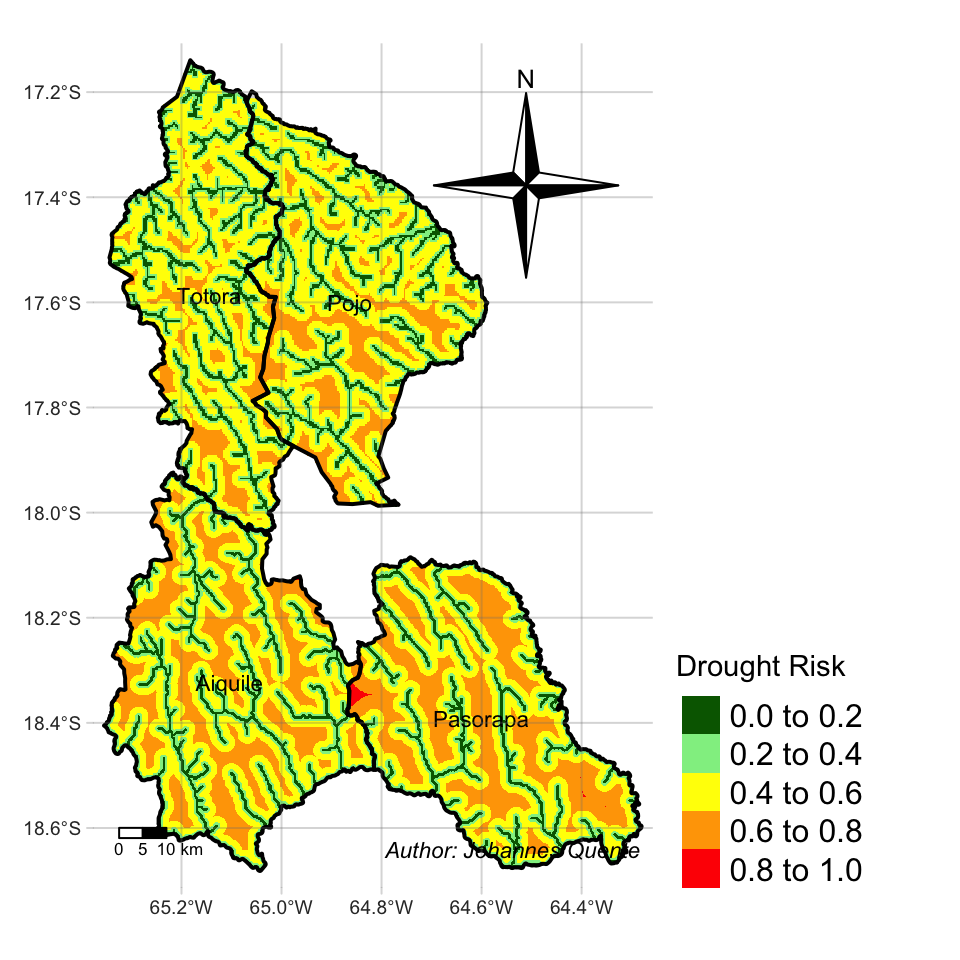
## Land Use (decided to not use)
### Rasterize
# land_filter_filter <- land_filter %>% filter(USO == "Productivo Ganadero: Pastoreo directo, forrajeo de aves.")
# land$USO %>% unique()
# Define your extent and resolution for the raster template
extent_template <- extent(land) # Define the extent
resolution_template <- 100 # Define the resolution
# Create an empty raster template
raster_template <- raster(extent_template, resolution = resolution_template)
# Convert SIMBOLO to factor
land$USO <- as.factor(land$USO)
# Rasterize
land_raster <- rasterize(land, raster_template, field = "USO", backround = 0)
# writeRaster(geo_raster, "geo_raster.tif", overwrite=TRUE)### reproject
# Define the UTM zone for Cochabamba (Zone 20S)
utm_crs <- "+proj=utm +zone=20 +south +datum=WGS84 +units=m +no_defs"
# Create a SpatialPointsDataFrame directly from filtered_ec
land_transformed <- st_as_sf(land, coords = c("X", "Y"), crs = utm_crs)
# Transform to WGS84
land_transformed_wgs84 <- st_transform(land_transformed, crs = "+proj=longlat +datum=WGS84")
# Extract extent from the transformed SpatialPointsDataFrame
new_extent <- st_bbox(land_transformed_wgs84)
# Modify the extent of the raster layer to match the new extent
raster_layer_with_new_extent <- setExtent(land_raster, new_extent)
# writeRaster(raster_layer_with_new_extent, "raster_layer_with_new_extent.tif")
# plot(raster_layer_with_new_extent)# label: tbl-land-reclass
# tbl-cap: "Reclassification table of the Land-Use Data"
### Reclass
# Create a tibble with the reclassification table
reclass_table_land <- tribble(
~from, ~to, ~becomes,
1, 1, 1,
1, 2, 1,
2, 3, 1,
3, 4, 1,
4, 5, 1,
5, 6, 0,
6, 7, 0,
7, 8, 1,
8, 9, 0,
9, 10, 1, # cambio
10, 11, 1
)
# Assuming you have a slope raster 'slope_raster'
# Reclassify the slope raster based on the reclassification table
land_reclassified <- reclassify(raster_layer_with_new_extent, reclass_table_land, include.lowest = TRUE, right = TRUE)
# Align Vegetation-Raster
# geo_reclassified <- rast(geo_reclassified)
# Adding a new column C to the data frame
reclass_table_land$Class <- c(
"Productivo Agropecuario, Extractivo Forestal",
"Productivo Agropecuario: Pastoreo, en sectores Cultivos alimenticios",
"Productivo Ganadero: Escaso pastoreo directo",
"Productivo: Alimenticios de consumo, subsistencia y mercado local.",
"Productivo Ganadero: Pastoreo directo, forrajeo de aves.",
"Extractivo Minero en parte",
"Productivo Aguas Superficiales Mixto",
"Productivo Agropecuario: Cultivos alimenticios",
"Extractivo Minero, Productivo Agropecuario, Protectivo, Vida silvestre",
"Recreativo: Escénico, Turístico",
"Productivo Agropecuario, Extractivo Forestal y Petrolero"
)
# kable(reclass_table_land)# label: fig-land-use
# fig-cap: "Reclassification Result of Pasorapa"
# fig-subcap:
# - "Reclassification Result of Pasorapa"
# - "Reclassification Result of Aiquile"
# fig-width: 5
# fig-height: 6
# layout-nrow: 1
# check
tmap_mode("plot")
tm_shape(land_reclassified, labels = "New Legend Label") +
tm_raster(style = "cat", palette = "Reds") +
tm_scale_bar(breaks = c(0, 5, 10), text.size = 0.9, position = c("left")) +
tm_compass(type = "4star", size = 6, position = c("right", "top")) +
tm_credits("Data source: geo.gob.bo", fontface = "italic", align = "right") + tm_graticules(alpha = 0.3) +
tm_layout(
legend.text.size = 1,
legend.position = c("left", "bottom"),
legend.outside = TRUE
)The Temperature Data from worldclim.org which consists of a variety of global weather data on an 30 Arc Second Accuracy. This data has been used to calculate the highest temperatures over all the available 12 Raster-Layers of the different months. The Result is one Raster-Layer that contains the highest temperatures of the average year from 1970-2000. The reclassification has been calculated according to Table 1.2.
The provided code implements automation to improve the processing of multiple Rasterlayers, consolidating them into a single Rasterlayer containing the minimum values across the dataset. This approach aims to enhance efficiency and simplify the workflow of raster data analysis. The Code used can be seen in the Appendix.
### Processing
# LOOP
# Crear una lista con los nombres de los objetos
lista_temp <- paste0("tmax", sprintf("%02d", 1:12))
# Generate names precip01 until precip12
# Inicializar una lista vacía para almacenar los resultados
lista_tmax_mask <- list()
# Iterar sobre cada objeto y aplicar las operaciones
for (i in seq_along(lista_temp)) {
# Acceder al objeto con el nombre correspondiente
tmax_obj <- get(lista_temp[i])
# Aplicar las operaciones crop y mask
tmax_crop <- terra::crop(tmax_obj, Pasorapa)
tmax_mask <- mask(tmax_crop, Pasorapa)
# Almacenar el resultado en la lista
lista_tmax_mask[[i]] <- tmax_mask
}
# Mostrar la lista de resultados (en caso de querer acceder a cada uno)
# lista_tmax_mask
# Para visualizar un objeto específico (por ejemplo, el primer objeto)
plot(lista_tmax_mask[[08]])
# Stack the Values and calc the min for everything
# Use rast() to convert the list to a SpatRaster object
stacked_rasters <- terra::rast(lista_tmax_mask)
# Apply the cellStats function to find the minimum value for each pixel across the stack
max_values <- terra::app(stacked_rasters, fun = max, na.rm = TRUE)
# saveRDS(max_values, file = "max_temp_pasorapa.rds")
#
# max_temp_pasorapa <- readRDS("max_temp_pasorapa.rds")
# Plot the resulting raster
# plot(max_values)max_temp_pasorapa <- readRDS("max_temp_pasorapa.rds")
# reclass
# Create a tibble with the reclassification table
reclass_table_max_temp <- tribble(
~from, ~to, ~becomes,
-Inf, 25, 0.2,
25, 27, 0.4,
27, 30, 0.6,
30, Inf, 1
)
# Reclassify the slope raster based on the reclassification table
max_temp_reclassified_pasorapa <- terra::classify(max_temp_pasorapa, reclass_table_max_temp, include.lowest = TRUE, right = TRUE)
# kable(reclass_table_max_temp)
# read data aiquile
max_temp_aiquile <- readRDS("max_temp_aiquile.rds")
# Reclassify the slope raster based on the reclassification table
max_temp_reclassified_aiquile <- terra::classify(max_temp_aiquile, reclass_table_max_temp, include.lowest = TRUE, right = TRUE)
# Totora
max_temp_totora <- readRDS("max_temp_totora.rds")
# Reclassify the slope raster based on the reclassification table
max_temp_reclassified_totora <- terra::classify(max_temp_totora, reclass_table_max_temp, include.lowest = TRUE, right = TRUE)
# Pojo
max_temp_pojo <- readRDS("max_temp_pojo.rds")
# Reclassify the slope raster based on the reclassification table
max_temp_reclassified_pojo <- terra::classify(max_temp_pojo, reclass_table_max_temp, include.lowest = TRUE, right = TRUE)?(caption)
# Define breaks and labels for the reclassification
breaks <- c(0, 0.2, 0.4, 0.6, 1)
# labels <- c("Muy bajo", "Bajo", "Moderado", "Alto", "Muy alto")
# Cut the raster values into categorical factors
# factor_raster <- cut(values(final_raster), breaks = breaks, labels = labels, include.lowest = TRUE)
# change name
names(max_temp_reclassified_aiquile) <- "Drought Risk"
# Color Palette in R
colors <- c("darkgreen","yellow", "orange","red")
# view
tmap_mode("plot")
tm_shape(all_municipalities) +
tm_polygons() +
tm_shape(max_temp_reclassified_aiquile) +
tm_raster(palette = colors) +
tm_shape(max_temp_reclassified_pasorapa) +
tm_raster(legend.show = FALSE, palette = colors) +
tm_shape(max_temp_reclassified_pojo) +
tm_raster(legend.show = FALSE, palette = colors) +
tm_shape(max_temp_reclassified_totora) +
tm_raster(legend.show = FALSE, palette = colors) +
tm_shape(all_municipalities) +
tm_borders(lwd = 2, col = "black") +
tm_layout(frame = FALSE) +
tm_text("NAME_3", size = 0.7) +
tm_scale_bar(breaks = c(0, 5, 10), text.size = 0.9, position = c("left")) +
tm_compass(type = "4star", size = 6, position = c("right", "top")) +
tm_credits("Author: Johannes Quente", fontface = "italic", align = "right") +
tm_graticules(alpha = 0.3) +
tm_layout(
legend.text.size = 1,
legend.position = c("left", "bottom"),
legend.outside = TRUE
)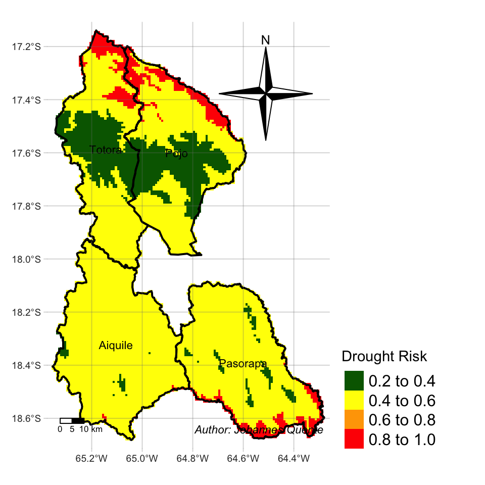
The provided Digital Elevation Model (DEM) consists of raster values showcasing variations in altitudes. These altitude values where converted into slope data using the terra::terrain -function from the Terra package. The reclassification has been calculated according to Table 1.2.
Subsequently, the slope data was categorized into varying degrees of possibility of drought in percent based on their inclination. For a detailed view of the reclassification code, please refer to the Appendix.
library(rayshader)
library(rgl)
# Convert raster to matrix
raster_matrix <- raster_to_matrix(dem_mask_pasorapa)
# writeRaster(dem_mask_pasorapa, "dem_mask_pasorapa_test.tif")
raster_matrix %>%
sphere_shade(texture = "desert") %>%
plot_map()
raster_matrix %>%
sphere_shade(texture = "desert") %>%
add_shadow(ray_shade(raster_matrix, zscale = 3), 0.5) %>%
add_shadow(ambient_shade(raster_matrix), 0) %>%
plot_3d(raster_matrix, zscale = 10, fov = 0, theta = 135, zoom = 0.75, phi = 45, windowsize = c(1000, 800))
Sys.sleep(0.2)
render_snapshot()# DEM
## crop and mask dem
dem_crop <- terra::crop(dem, Pasorapa)
dem_mask_pasorapa <- mask(dem_crop, Pasorapa)
terrain_pasorapa <- terrain(dem_mask_pasorapa)
# Create a tibble with the reclassification table
reclass_table_dem <- tribble(
~from, ~to, ~becomes,
0, 10, 0.09, # 0-10: Plano
10, 20, 0.2, # 10-20: Mod. inclinado
20, 30, 0.34, # 20-30: Inclinado
30, 45, 0.56, # 30-45: Mod. empinado
45, Inf, 1 # 45 and above: Fuert. empinado
)
# Assuming you have a slope raster 'slope_raster'
# Reclassify the slope raster based on the reclassification table
dem_reclassified_pasorapa <- classify(terrain_pasorapa, reclass_table_dem, include.lowest = TRUE, right = TRUE)
# Adding a new column C to the data frame
reclass_table_dem$Class <- c("Plano a casi plano", "Mod. inclinado", "Inclinado", "Mod. empinado", "Fuert. empinado")
# kable(reclass_table_dem)
### Pasorapa
### Aiquile
# DEM
## crop and mask dem
dem_crop <- terra::crop(dem, Aiquile)
dem_mask_aiquile <- mask(dem_crop, Aiquile)
terrain_aiquile <- terrain(dem_mask_aiquile)
# Create a tibble with the reclassification table
reclass_table_dem <- tribble(
~from, ~to, ~becomes,
0, 10, 0.09, # 0-10: Plano
10, 20, 0.2, # 10-20: Mod. inclinado
20, 30, 0.34, # 20-30: Inclinado
30, 45, 0.56, # 30-45: Mod. empinado
45, Inf, 1 # 45 and above: Fuert. empinado
)
# Assuming you have a slope raster 'slope_raster'
# Reclassify the slope raster based on the reclassification table
dem_reclassified_aiquile <- classify(terrain_aiquile, reclass_table_dem, include.lowest = TRUE, right = TRUE)
# Adding a new column C to the data frame
reclass_table_dem$Class <- c("Plano a casi plano", "Mod. inclinado", "Inclinado", "Mod. empinado", "Fuert. empinado")# Totora
# saveRDS(dem_reclassified_pasorapa, "dem_reclassified_pasorapa.rds")
dem_reclassified_pasorapa <- readRDS("dem_reclassified_pasorapa.rds")
# Aiquile
# saveRDS(dem_reclassified_aiquile, "dem_reclassified_aiquile.rds")
dem_reclassified_aiquile <- readRDS("dem_reclassified_aiquile.rds")
# Totora
dem_reclassified_totora <- readRDS("dem_reclassified_totora.rds")
# Pojo
dem_reclassified_pojo <- readRDS("dem_reclassified_pojo.rds")# Define breaks and labels for the reclassification
breaks <- c(0, 0.09, 0.2, 0.34, 0.59, 1)
# labels <- c("Muy bajo", "Bajo", "Moderado", "Alto", "Muy alto")
# Cut the raster values into categorical factors
# factor_raster <- cut(values(final_raster), breaks = breaks, labels = labels, include.lowest = TRUE)
# change name
names(dem_reclassified_aiquile) <- "Drought Risk"
# Color Palette in R
# colors <- c("darkgreen","yellow", "orange","red")
# view
tmap_mode("plot")
tm_shape(all_municipalities) +
tm_polygons() +
tm_shape(dem_reclassified_aiquile) +
tm_raster(palette = colors) +
tm_shape(dem_reclassified_pasorapa) +
tm_raster(legend.show = FALSE, palette = colors) +
tm_shape(dem_reclassified_pojo) +
tm_raster(legend.show = FALSE, palette = colors) +
tm_shape(dem_reclassified_totora) +
tm_raster(legend.show = FALSE, palette = colors) +
tm_shape(all_municipalities) +
tm_borders(lwd = 2, col = "black") +
tm_layout(frame = FALSE) +
tm_text("NAME_3", size = 0.7) +
tm_scale_bar(breaks = c(0, 5, 10), text.size = 0.9, position = c("left")) +
tm_compass(type = "4star", size = 6, position = c("right", "top")) +
tm_credits("Author: Johannes Quente", fontface = "italic", align = "right") +
tm_graticules(alpha = 0.3) +
tm_layout(
legend.text.size = 1,
legend.position = c("left", "bottom"),
legend.outside = TRUE
)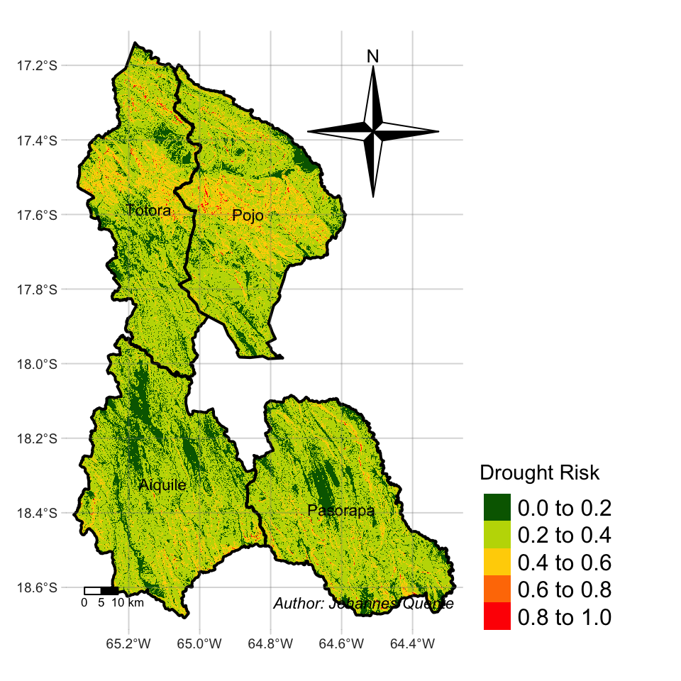
The provided Digital Elevation Model (DEM) consists of raster values showcasing variations in altitudes. These altitude values where converted into perspective data, therefore each pixel now showing the degree in which the groundstructure faces (0-360 degrees) using the terra::terrain("aspect") -function from the Terra package. The reclassification has been calculated according to Table 1.2.
Subsequently the slope data was categorized into varying degrees of possibility of drought (in %) based on their positioning due to facing the sun during the day. For further review of the reclassification code, please refer to the Appendix.
### terrain::aspect Pasorapa & Aiquile
aspect_pasorapa <- terrain(dem_mask_pasorapa, "aspect")
aspect_aiquile <- terrain(dem_mask_aiquile, "aspect")
# writeRaster(aspect_pasorapa, "aspect_pasorapa.tif")
# writeRaster(aspect_aiquile, "aspect_aiquile.tif")
# reclass
# Create a tibble with the reclassification table
reclass_table_aspect <- tribble(
~from, ~to, ~becomes,
-Inf, 45, 0,
45, 135, 0.25,
135, 225, 1,
225, 315, 0.25,
315, Inf, 0
)
# Pasorapa: Reclassify the slope raster based on the reclassification table
aspect_reclassified_aiquile <- terra::classify(aspect_aiquile, reclass_table_aspect, include.lowest = TRUE, right = TRUE)
# Aiquile: Reclassify the slope raster based on the reclassification table
aspect_reclassified_pasorapa <- terra::classify(aspect_pasorapa, reclass_table_aspect, include.lowest = TRUE, right = TRUE)?(caption)
# write rds
# saveRDS(aspect_reclassified_aiquile, "aspect_reclassified_aiquile.rds")
# saveRDS(aspect_reclassified_pasorapa, "aspect_reclassified_pasorapa.rds")
# read rds
aspect_reclassified_aiquile <- readRDS("aspect_reclassified_aiquile.rds")
aspect_reclassified_pasorapa <- readRDS("aspect_reclassified_pasorapa.rds")
# read other data
aspect_reclassified_pojo <- readRDS("aspect_reclassified_pojo.rds")
aspect_reclassified_totora <- readRDS("aspect_reclassified_totora.rds")
# kable(reclass_table_aspect)# change name
names(aspect_reclassified_aiquile) <- "Drought Risk"
tm_shape(all_municipalities) +
tm_polygons() +
tm_shape(aspect_reclassified_aiquile) +
tm_raster(palette = colors) +
tm_shape(aspect_reclassified_pasorapa) +
tm_raster(legend.show = FALSE, palette = colors) +
tm_shape(aspect_reclassified_pojo) +
tm_raster(legend.show = FALSE, palette = colors) +
tm_shape(aspect_reclassified_totora) +
tm_raster(legend.show = FALSE, palette = colors) +
tm_shape(all_municipalities) +
tm_borders(lwd = 2, col = "black") +
tm_layout(frame = FALSE) +
tm_text("NAME_3", size = 0.7) +
tm_scale_bar(breaks = c(0, 5, 10), text.size = 0.9, position = c("left")) +
tm_compass(type = "4star", size = 6, position = c("right", "top")) +
tm_credits("Author: Johannes Quente", fontface = "italic", align = "right") +
tm_graticules(alpha = 0.3) +
tm_layout(
legend.text.size = 1,
legend.position = c("left", "bottom"),
legend.outside = TRUE
)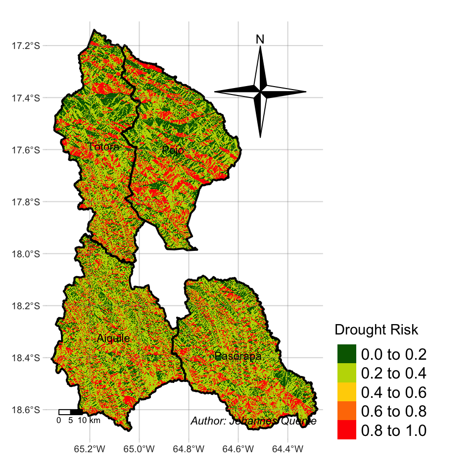
The following Data provided by Fick and Hijmans (2017) resembles Precipitation Data on a 30 Arc Second Accuracy. The format provides one Raster-Layer for each month.
Twelve raster layers have been aggregated to generate a unified raster layer, facilitating subsequent classification. The outcome is a comprehensive raster layer encompassing the total precipitation for the average year spanning from 1970 to 2000. The utilized code is available in the Appendix In the reclassification process, values were partitioned into five equally distributed groups based on frequency, with each group representing 20% of the total data frequency. The distribution and grouping methodology are illustrated in Figure 1.6. The reclassification has been calculated according to Table 1.2.
precip_pasorapa <- rast("sum_raster_pasorapa.tif")
precip_aiquile <- rast("sum_raster.tif")
precip_pojo <- rast("precip_pojo.tif")
precip_totora <- rast("precip_totora.tif")
precip_todos <- rast("precip_todos.tif")
# Reclass
# Create a tibble with the reclassification table
reclass_table_precip <- tribble(
~from, ~to, ~becomes,
1058.2, Inf, 0,
640, 1058.2, 0.25,
571, 640, 0.5,
513.8, 571, 0.75,
-Inf, 513.8, 1
)
# Reclassify the slope raster based on the reclassification table
precip_reclassified_pasorapa <- terra::classify(precip_pasorapa, reclass_table_precip, include.lowest = TRUE, right = TRUE)
precip_reclassified_aiquile <- terra::classify(precip_aiquile, reclass_table_precip, include.lowest = TRUE, right = TRUE)
precip_reclassified_pojo <- terra::classify(precip_pojo, reclass_table_precip, include.lowest = TRUE, right = TRUE)
precip_reclassified_totora <- terra::classify(precip_totora, reclass_table_precip, include.lowest = TRUE, right = TRUE)
# todos
precip_reclassified_todos <- terra::classify(precip_todos, reclass_table_precip, include.lowest = TRUE, right = TRUE)
# table
# kable(reclass_table_precip)?(caption)
# Specify the number of breaks (bins)
num_breaks <- 5
break_values <- quantile(values(precip_todos, na.rm = TRUE), probs = seq(0, 1, length.out = num_breaks + 1))
# Create the histogram with equal-frequency breaks
hist(values(precip_todos), breaks = "FD", main = "Histogram of Data Distribution", xlab = "Drought Risk Values", col = "skyblue", border = "black", plot = TRUE)
# Add vertical lines to represent the breaks
abline(v = quantile(values(precip_todos, na.rm = TRUE), probs = seq(0, 1, length.out = num_breaks + 1)), col = "red", lty = 2)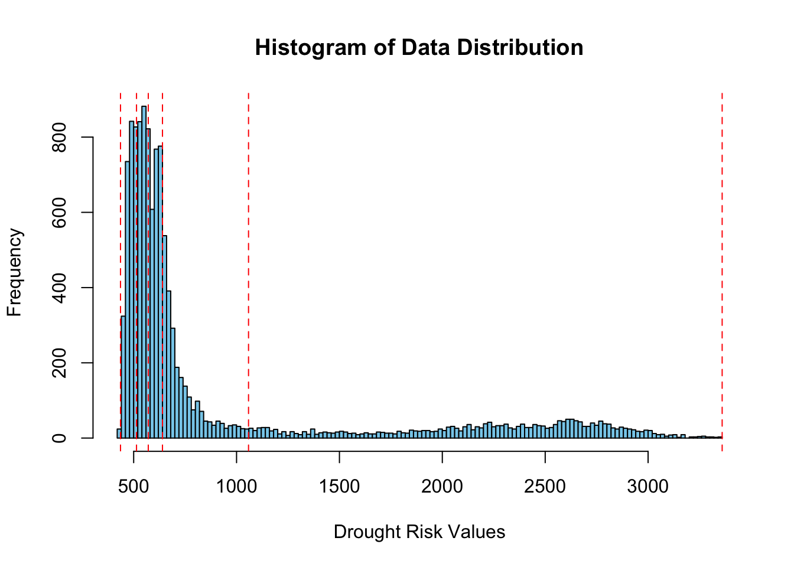
# change name
names(precip_reclassified_todos) <- "Drought Risk"
tm_shape(all_municipalities) +
tm_polygons() +
tm_shape(precip_reclassified_todos) +
tm_raster(palette = colors) +
tm_shape(all_municipalities) +
tm_borders(lwd = 2, col = "black") +
tm_layout(frame = FALSE) +
tm_text("NAME_3", size = 0.7) +
tm_scale_bar(breaks = c(0, 5, 10), text.size = 0.9, position = c("left")) +
tm_compass(type = "4star", size = 6, position = c("right", "top")) +
tm_credits("Author: Johannes Quente", fontface = "italic", align = "right") +
tm_graticules(alpha = 0.3) +
tm_layout(
legend.text.size = 1,
legend.position = c("left", "bottom"),
legend.outside = TRUE
)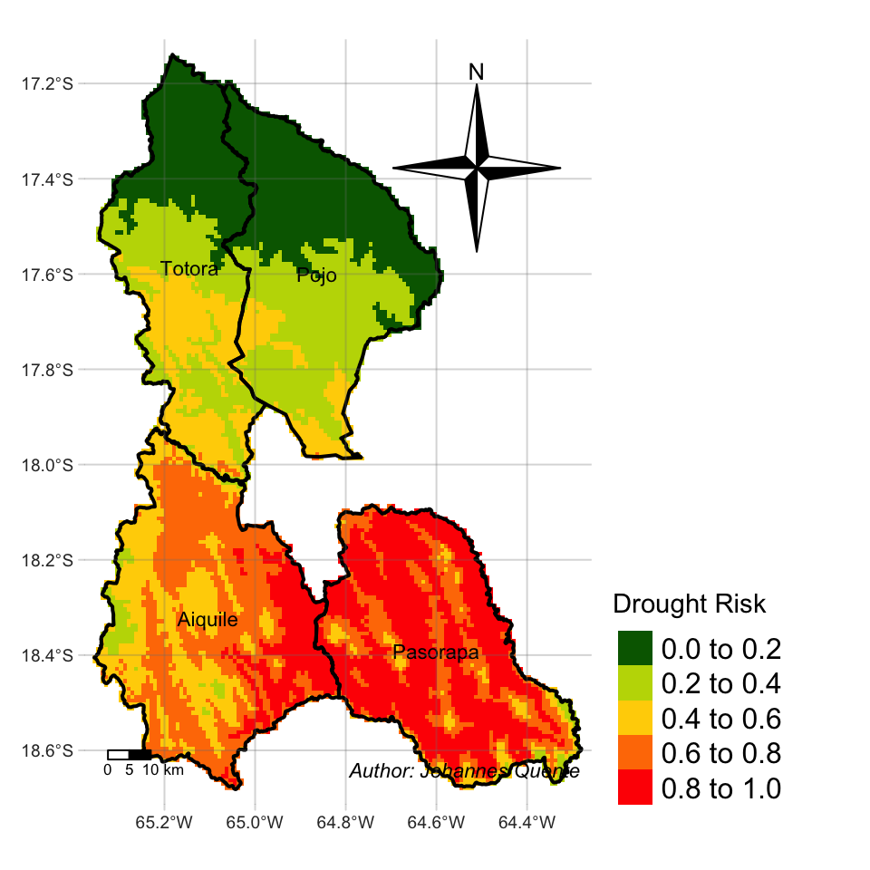
In this chapter the Results of the Drought Risk Modeling are being presented: Figure 1.8 provides a visual representation of the data distribution, offering transparent insight into the significance of the reclassification values.
Further Figure 1.9 showcases the Drought Risk Map results for the four municipalities, aiding in understanding the spatial distribution of drought risk. In Figure 1.10 displays the data values across the four municipalities using Histograms, categorized into five equally distributed classes: “Very Low”, “Low”, “Moderate”, “High”, and “Very High”.
A ratio scale-based risk mapping has been used to evenly distribute the data produced during the analysis. The Figure 1.11 presents the results with data values equally distributed across the four municipalities, providing a comprehensive overview of drought risk levels.
### Totora
# Align resolutions
river_reclassified <- terra::resample(river_totora, dem_reclassified_totora)
aspect_reclassified <- terra::resample(aspect_reclassified_totora, river_reclassified)
max_temp_reclassified <- terra::resample(max_temp_reclassified_totora, aspect_reclassified)
precip_reclassified <- terra::resample(precip_reclassified_totora, max_temp_reclassified)
dem_reclassified <- terra::resample(dem_reclassified_totora, precip_reclassified)
# Adjusted weights
weight_temp_max <- 0.2
weight_perspektive <- 0.15
weight_dem <- 0.15
weight_river_dist <- 0.2
weight_precip <- 0.3
# Perform the adjusted weighted combination
final_raster <- weight_temp_max * max_temp_reclassified +
weight_perspektive * aspect_reclassified +
weight_dem * dem_reclassified +
weight_river_dist * river_reclassified +
weight_precip * precip_reclassified
final_raster_totora <- final_raster
# Define the weights and data
weights <- c(0.2, 0.1, 0.1, 0.1, 0.2, 0.3)
data_names <- c("Max temp", "Perspektive", "Land Use", "DEM", "River Data", "Precipitation")
# Create the table
table_data <- data.frame(Weight = weights, Data = data_names)# 0% 20% 40% 60% 80% 100%
# 0.05683258 0.26250001 0.30620000 0.35955495 0.42100001 0.69281250
# Define breaks and labels for the reclassification
breaks <- c(0.05683258, 0.26250001, 0.3062, 0.35955495, 0.42100001, 0.69281250)
labels <- c("Muy bajo", "Bajo", "Moderado", "Alto", "Muy alto")
# Cut the raster values into categorical factors
factor_raster <- cut(values(final_raster_totora), breaks = breaks, labels = labels, include.lowest = TRUE)
# change name
names(final_raster_totora) <- "Drought Risk"
# Create a new raster with categorized values
r_categorized <- final_raster_totora
values(r_categorized) <- as.factor(factor_raster)
r_categorized_totora <- r_categorized### Pojo
# Align resolutions
river_reclassified <- terra::resample(river_pojo, dem_reclassified_pojo)
aspect_reclassified <- terra::resample(aspect_reclassified_pojo, river_reclassified)
max_temp_reclassified <- terra::resample(max_temp_reclassified_pojo, aspect_reclassified)
precip_reclassified <- terra::resample(precip_reclassified_pojo, max_temp_reclassified)
dem_reclassified <- terra::resample(dem_reclassified_pojo, precip_reclassified)
# Perform the adjusted weighted combination
final_raster <- weight_temp_max * max_temp_reclassified +
weight_perspektive * aspect_reclassified +
weight_dem * dem_reclassified +
weight_river_dist * river_reclassified +
weight_precip * precip_reclassified
final_raster_pojo <- final_raster
# plot(final_raster)
# Define the weights and data
weights <- c(0.2, 0.1, 0.1, 0.1, 0.2, 0.3)
data_names <- c("Max temp", "Perspektive", "Land Use", "DEM", "River Data", "Precipitation")
# Create the table
table_data <- data.frame(Weight = weights, Data = data_names)# 0% 20% 40% 60% 80% 100%
# 0.07236859 0.26130000 0.30203100 0.34262143 0.40750000 0.65400001
# Define breaks and labels for the reclassification
breaks <- c(0.07236859, 0.2613, 0.302031, 0.34262143, 0.4075, 0.65400001)
labels <- c("Muy bajo", "Bajo", "Moderado", "Alto", "Muy alto")
# Cut the raster values into categorical factors
factor_raster <- cut(values(final_raster), breaks = breaks, labels = labels, include.lowest = TRUE)
# change name
names(final_raster) <- "Drought Risk"
# Create a new raster with categorized values
r_categorized <- final_raster
values(r_categorized) <- as.factor(factor_raster)
r_categorized_pojo <- r_categorized### Pasorapa
# Align resolutions
river_reclassified <- terra::resample(river_reclassified_pasorapa, dem_reclassified_pasorapa)
aspect_reclassified <- terra::resample(aspect_reclassified_pasorapa, river_reclassified)
max_temp_reclassified <- terra::resample(max_temp_reclassified_pasorapa, aspect_reclassified)
precip_reclassified <- terra::resample(precip_reclassified_pasorapa, max_temp_reclassified)
dem_reclassified <- terra::resample(dem_reclassified_pasorapa, precip_reclassified)
# Ponderación de criterios segun: ELABORACION DEL MAPA DE RIESGO A SEQUIAS
# ((( [V_ATsqia_1] *0.75) + ( [V_PL_sqia] *0.25)) * 0.40) + ((( [V_uso_sqia] *0.52) + ( [V_dens] *0.16) +( [V_DR_sqia] *0.14) + ( [V_slp_sqia] *0.1) + ( [V_Orie_sqi] *0.08)) *0.60)
# Perform the adjusted weighted combination
final_raster <- weight_temp_max * max_temp_reclassified +
weight_perspektive * aspect_reclassified +
weight_dem * dem_reclassified +
weight_river_dist * river_reclassified +
weight_precip * precip_reclassified
final_raster_pasorapa <- final_raster
# Define the weights and data
weights <- c(0.2, 0.1, 0.1, 0.1, 0.2, 0.3)
data_names <- c("Max temp", "Perspektive", "Land Use", "DEM", "River Data", "Precipitation")
# Create the table
table_data <- data.frame(Weight = weights, Data = data_names)# 0% 20% 40% 60% 80% 100%
# 0.2885000 0.4974375 0.5435000 0.5865875 0.6375000 0.8966000
# Define breaks and labels for the reclassification
breaks <- c(0.2885, 0.4974375, 0.5435, 0.5865875, 0.6375, 0.8966)
labels <- c("Muy bajo", "Bajo", "Moderado", "Alto", "Muy alto")
# Cut the raster values into categorical factors
factor_raster <- cut(values(final_raster), breaks = breaks, labels = labels, include.lowest = TRUE)
# change name
names(final_raster) <- "Drought Risk"
# Create a new raster with categorized values
r_categorized <- final_raster
values(r_categorized) <- as.factor(factor_raster)
r_categorized_pasorapa <- r_categorized### Aiquile
# Align resolutions (resample geo)
river_reclassified <- terra::resample(river_reclassified_aiquile, dem_reclassified_aiquile)
# Align resolutions (resample geo)
aspect_reclassified <- terra::resample(aspect_reclassified_aiquile, river_reclassified)
# Align resolutions (resample geo)
max_temp_reclassified <- terra::resample(max_temp_reclassified_aiquile, aspect_reclassified)
# Align resolutions (resample geo)
precip_reclassified <- terra::resample(precip_reclassified_aiquile, max_temp_reclassified)
dem_reclassified <- terra::resample(dem_reclassified_aiquile, precip_reclassified)
# Perform the adjusted weighted combination
final_raster <- weight_temp_max * max_temp_reclassified +
weight_perspektive * aspect_reclassified +
weight_dem * dem_reclassified +
weight_river_dist * river_reclassified +
weight_precip * precip_reclassified
final_raster_aiquile <- final_raster
# Define the weights and data
weights <- c(0.2, 0.15, 0.15, 0.2, 0.3)
data_names <- c("Max temp", "Perspektive", "DEM", "River Data", "Precipitation")
# Create the table
table_data <- data.frame(Weight = weights, Data = data_names)
# Show the table
# kable(table_data)# 0% 20% 40% 60% 80% 100%
# 0.2085000 0.4322500 0.4763125 0.5184375 0.5797500 0.8700000
# Define breaks and labels for the reclassification
breaks <- c(0.2085, 0.43225, 0.4763125, 0.5184375, 0.57975, 0.87)
labels <- c("Muy bajo", "Bajo", "Moderado", "Alto", "Muy alto")
# Cut the raster values into categorical factors
factor_raster <- cut(values(final_raster), breaks = breaks, labels = labels, include.lowest = TRUE)
# change name
names(final_raster) <- "Drought Risk"
# Create a new raster with categorized values
r_categorized <- final_raster
values(r_categorized) <- as.factor(factor_raster)
r_categorized_aiquile <- r_categorized# Define the municipalities
municipalities <- c("pojo", "pasorapa", "aiquile", "totora")
# Set the number of breaks (bins)
num_breaks <- 5
# Loop over each municipality
for (municipality in municipalities) {
# Get the final raster data for the current municipality
final_raster <- switch(municipality,
pojo = final_raster_pojo,
pasorapa = final_raster_pasorapa,
aiquile = final_raster_aiquile,
totora = final_raster_totora)
# Check if final_raster is NULL
# if (is.null(final_raster)) {
# cat("Error: Final raster data is NULL for", municipality, "\n")
# } else {
# Compute the break values
break_values <- quantile(values(final_raster, na.rm = TRUE), probs = seq(0, 1, length.out = num_breaks + 1))
# Capitalize the first letter of the municipality name
capitalized_municipality <- str_to_title(municipality)
# Create the histogram with equal-frequency breaks
hist(values(final_raster), breaks = "FD", main = paste("Histogram of Drought Risk for", capitalized_municipality), xlab = "Drought Risk Values", col = "skyblue", border = "black", plot = TRUE)
# Add vertical lines to represent the breaks
abline(v = break_values, col = "red", lty = 2)
}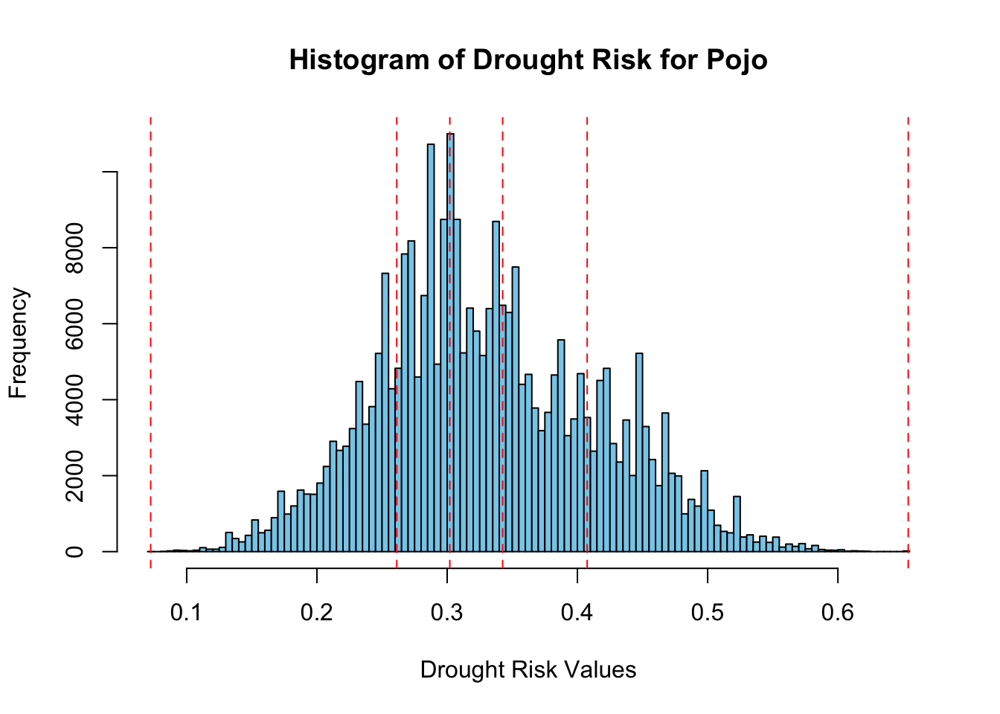
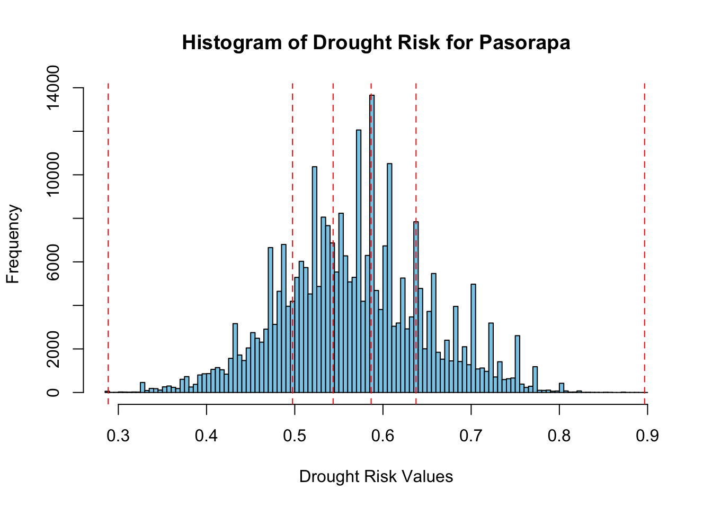
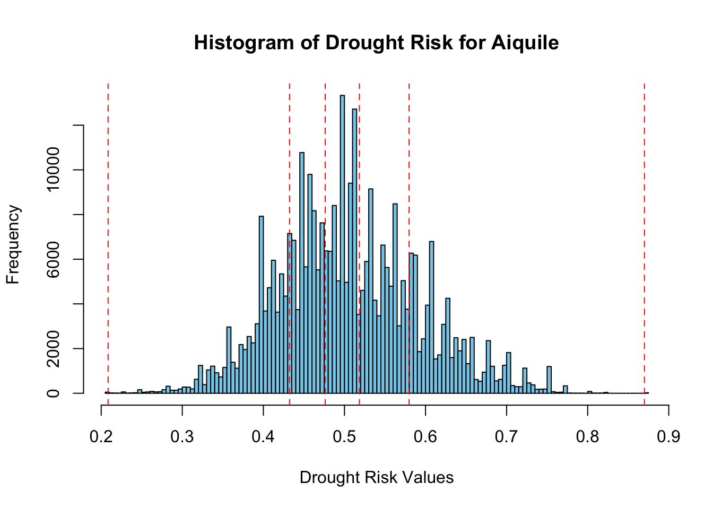
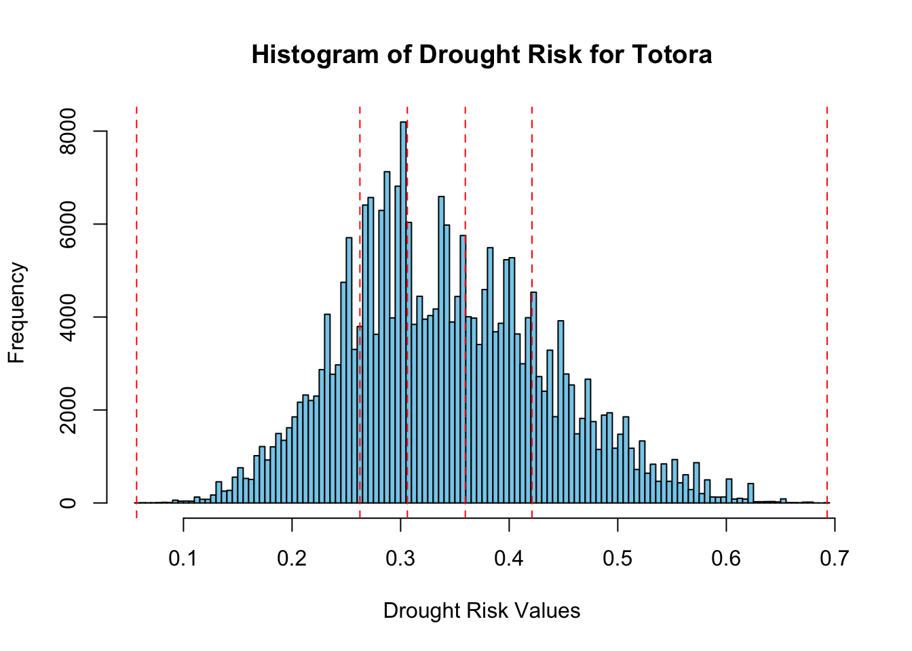
# change name
names(precip_reclassified_todos) <- "Drought Risk"
tm_shape(all_municipalities) +
tm_polygons() +
tm_shape(r_categorized_totora) +
tm_raster(palette = colors) +
tm_shape(r_categorized_pojo) +
tm_raster(legend.show = FALSE, palette = colors) +
tm_shape(r_categorized_aiquile) +
tm_raster(legend.show = FALSE, palette = colors) +
tm_shape(r_categorized_pasorapa) +
tm_raster(legend.show = FALSE, palette = colors) +
tm_shape(all_municipalities) +
tm_borders(lwd = 2, col = "black") +
tm_layout(frame = FALSE) +
tm_text("NAME_3", size = 0.7) +
tm_scale_bar(breaks = c(0, 5, 10), text.size = 0.9, position = c("left")) +
tm_compass(type = "4star", size = 6, position = c("right", "top")) +
tm_credits("Author: Johannes Quente", fontface = "italic", align = "right") +
tm_graticules(alpha = 0.3) +
tm_layout(
legend.text.size = 1,
legend.position = c("left", "bottom"),
legend.outside = TRUE
)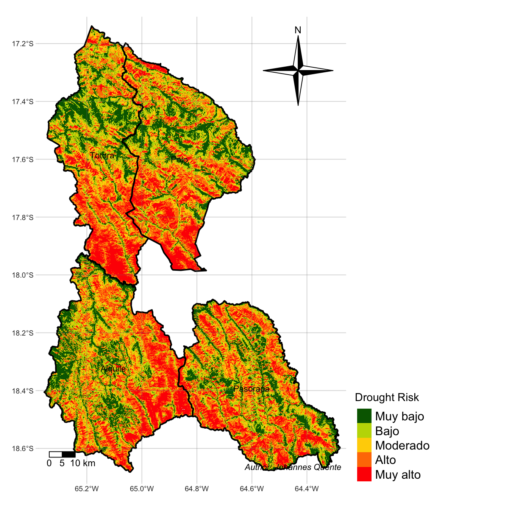
# Use terra::merge to combine the raster layers
final_raster <- terra::merge(final_raster_pojo, final_raster_pasorapa, final_raster_aiquile, final_raster_totora)
# Specify the number of breaks (bins)
num_breaks <- 5
break_values <- quantile(values(final_raster, na.rm = TRUE), probs = seq(0, 1, length.out = num_breaks + 1))
# Extract numeric values
numeric_breaks <- as.numeric(as.character(break_values))
# Create the histogram with equal-frequency breaks
hist(final_raster, breaks = "FD", main = "Histogram of Drought Risk", xlab = "Drought Risk Values", col = "skyblue", border = "black", plot = TRUE)
# Add vertical lines at quantile positions
abline(v = break_values, col = "red", lty = 2)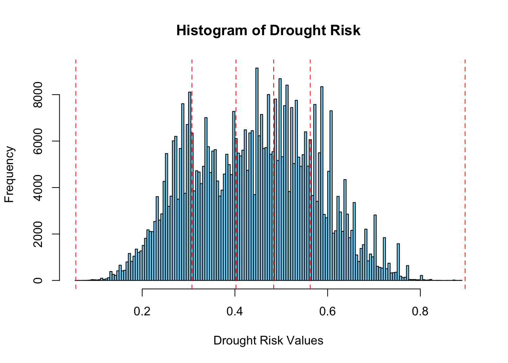
# Define breaks and labels for the reclassification
breaks <- numeric_breaks
labels <- c("Muy bajo", "Bajo", "Moderado", "Alto", "Muy alto")
# Cut the raster values into categorical factors
factor_raster <- cut(values(final_raster), breaks = breaks, labels = labels, include.lowest = TRUE)
# change name
names(final_raster) <- "Drought Risk"
# Create a new raster with categorized values
r_categorized <- final_raster
values(r_categorized) <- as.factor(factor_raster)
# view
tmap_mode("plot")
tm_shape(r_categorized, labels = "New Legend Label") +
tm_raster(palette = colors) +
tm_shape(all_municipalities) +
tm_borders(lwd = 2, col = "black") +
tm_layout(frame = FALSE) +
tm_text("NAME_3", size = 0.7) +
tm_scale_bar(breaks = c(0, 5, 10), text.size = 0.9, position = c("left")) +
tm_compass(type = "4star", size = 6, position = c("right", "top")) +
tm_credits("Author: Johannes Quente", fontface = "italic", align = "right") +
tm_graticules(alpha = 0.3) +
tm_layout(
legend.text.size = 1,
legend.position = c("left", "bottom"),
legend.outside = TRUE
)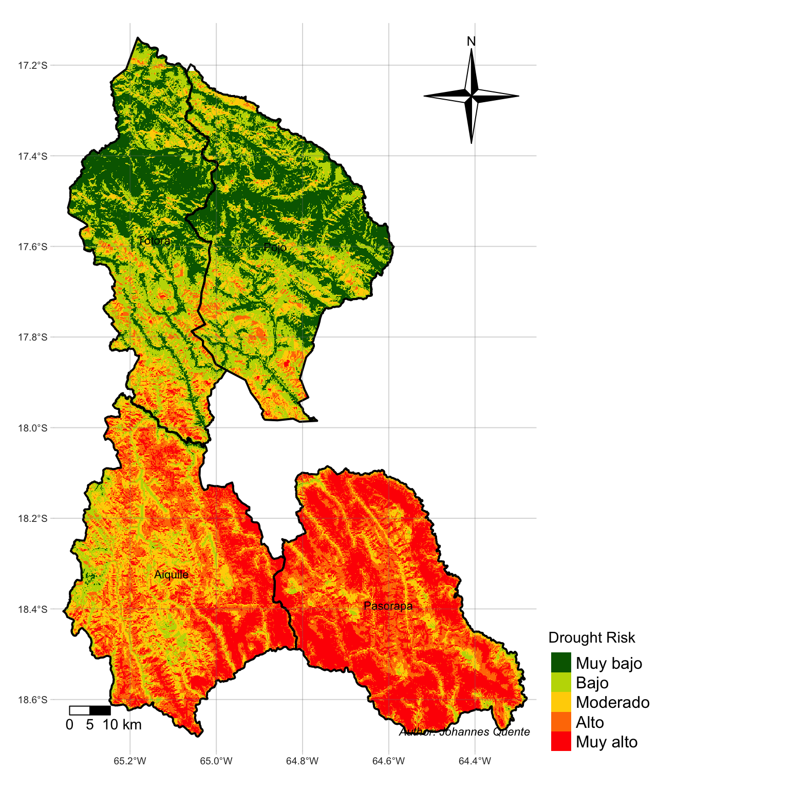
This study aims to evaluate the risk of drought, flood, and frost and identify potential risk zones in the Valle Alto region of Cochabamba, including Aiquile, Pasorapa, Pojo, and Totoro.
The objective of this study is to provide evidence-based information to enhance the resilience of communities and ecosystems to hazards related to drought, flood, and frost. A ratio scale-based risk mapping has been identified as the most effective method to evenly distribute the data produced during the analysis.
To improve the precision of our models, it is crucial to evaluate this readjustment based on empirical insights and observations from the studied environments. By fine-tuning these weights, we can align our models more closely with the intricate realities of these ecosystems, potentially revealing details that may have been missed in previous analyses.
In proposing these customized weighting and reclassification parameters, my aim is to assist the scientific discourse by introducing a more precise perspective. This method offers a clearer view through which various dynamics of our natural environments can be examined, comprehended, and conveyed.
While temperature is a standard indicator, its impact varies across different plant species, suggesting the need for a more comprehensive consideration of frost impacts beyond freezing temperatures (Condori et al. 2014).
In the future, by leveraging satellite imagery and tapping into local knowledge through field visits and workshops with stakeholders, there is potential to enhance the mapping of historically flood-prone areas significantly. This would involve evaluating the intensity of floods and delineating these zones to gain deeper insights into the frequency and impact of flooding. Such a comprehensive approach is crucial for effectively addressing the multifaceted challenges posed by these natural phenomena (Tanim et al. 2022).
The objective of this study was to identify areas in the four Municipalities of the Cono Sur area of the State of Cochabamba that are susceptible to droughts, floods, and frosts.
To achieve this, various geospatial datasets were explored, including terrain attributes, geological features, and precipitation records. Each dataset was analyzed using predetermined weights to emphasize their relative importance in the study. During the Multicriteria Analysis, we integrated numerous Raster and Vector Layers using weighted factors.
By utilizing the R-Studio Environment and key packages crucial for these calculations the resultant raster (Figure 1.9 and Figure 1.11) provides a comprehensive representation of the region’s environmental aspects.
The methodology aims to identify areas that are at risk of severe impact from certain meteorological conditions. It supports local policymaking by utilizing an adaptable approach.
The risk potential is classified into five categories: ‘Very low’, ‘Low’, ‘Moderate’, ‘High’, and ‘Very High’, as shown on the map. To ensure a balanced visualization of the five risk categories, the resulting data has been equally partitioned into five equally distributed groups.
# view
tmap_mode("plot")
tm_shape(r_categorized_totora, labels = "New Legend Label") +
tm_raster(style = "cont", palette = colors, breaks = breaks) + # Change style to "cont" or "cat"
tm_scale_bar(breaks = c(0, 5, 10), text.size = 0.9, position = c("left")) +
tm_compass(type = "4star", size = 6, position = c("right", "top")) +
tm_credits("Author: Johannes Quente", fontface = "italic", align = "right") +
tm_graticules(alpha = 0.3) +
tm_layout(
legend.text.size = 1,
legend.position = c("left", "bottom"),
legend.outside = TRUE
)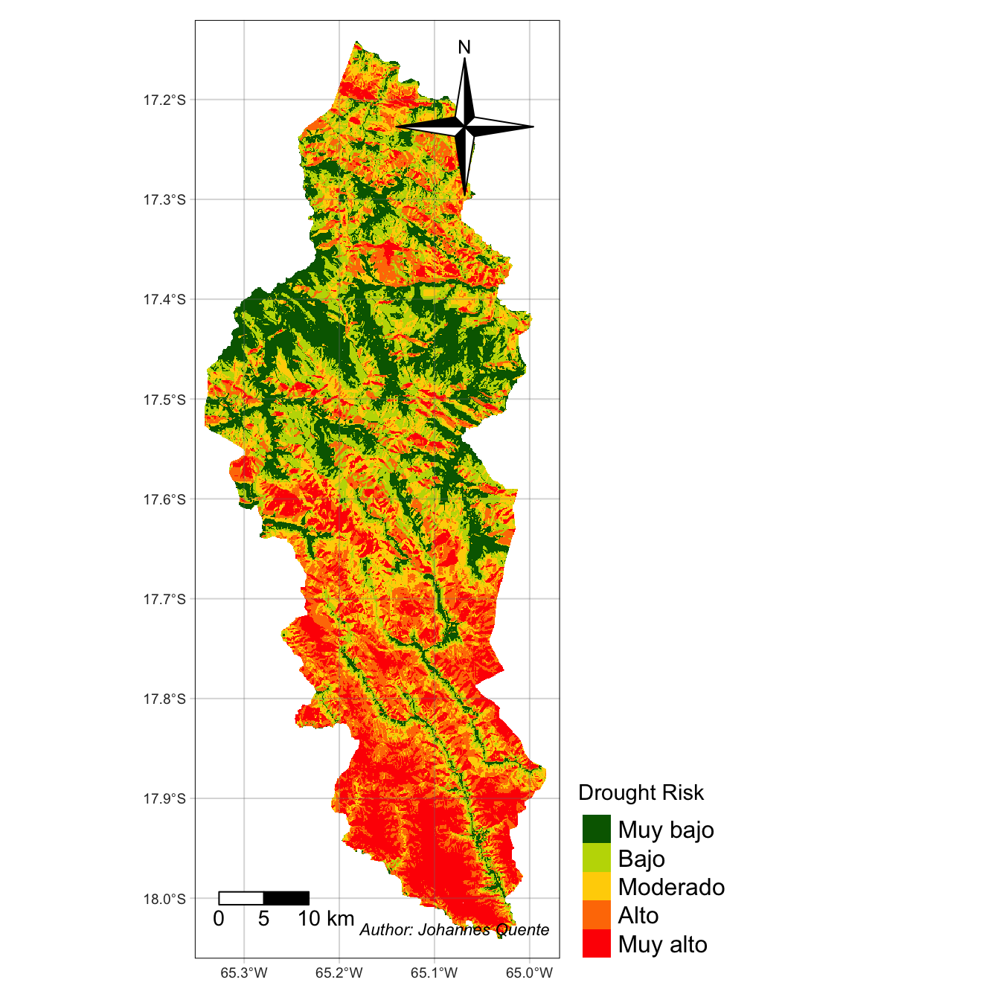
tm_shape(r_categorized_pojo, labels = "New Legend Label") +
tm_raster(style = "cont", palette = colors, breaks = breaks) + # Change style to "cont" or "cat"
tm_scale_bar(breaks = c(0, 5, 10), text.size = 0.9, position = c("left")) +
tm_compass(type = "4star", size = 6, position = c("right", "top")) +
tm_credits("Author: Johannes Quente", fontface = "italic", align = "right") +
tm_graticules(alpha = 0.3) +
tm_layout(
legend.text.size = 1,
legend.position = c("left", "bottom"),
legend.outside = TRUE
)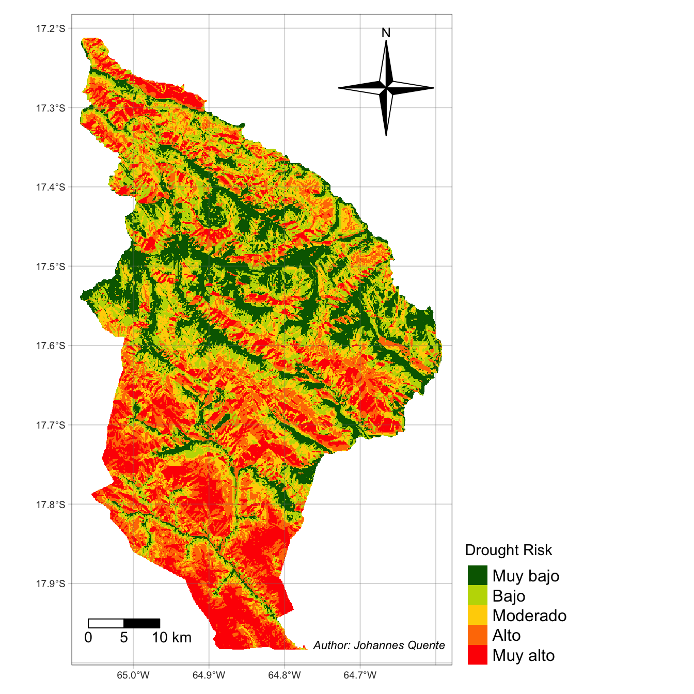
tm_shape(r_categorized_pasorapa, labels = "New Legend Label") +
tm_raster(style = "cont", palette = colors, breaks = breaks) + # Change style to "cont" or "cat"
tm_scale_bar(breaks = c(0, 5, 10), text.size = 0.9, position = c("left")) +
tm_compass(type = "4star", size = 6, position = c("right", "top")) +
tm_credits("Author: Johannes Quente", fontface = "italic", align = "right") +
tm_graticules(alpha = 0.3) +
tm_layout(
legend.text.size = 1,
legend.position = c("left", "bottom"),
legend.outside = TRUE
)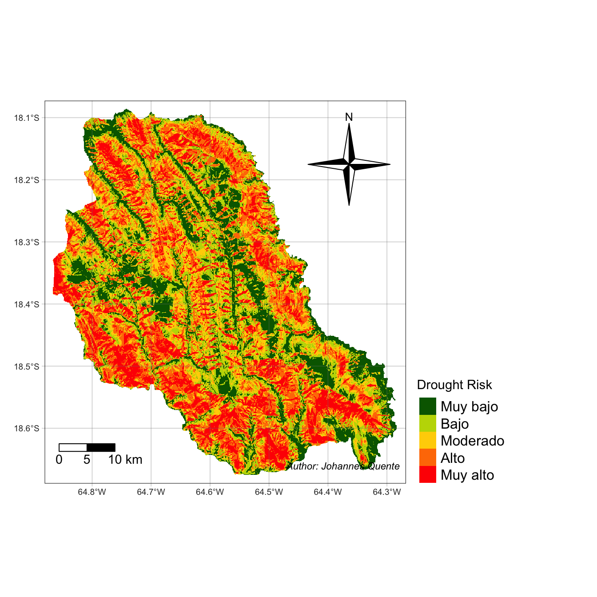
tm_shape(r_categorized_aiquile, labels = "New Legend Label") +
tm_raster(style = "cont", palette = colors, breaks = breaks) + # Change style to "cont" or "cat"
tm_scale_bar(breaks = c(0, 5, 10), text.size = 0.9, position = c("left")) +
tm_compass(type = "4star", size = 6, position = c("right", "top")) +
tm_credits("Author: Johannes Quente", fontface = "italic", align = "right") +
tm_graticules(alpha = 0.3) +
tm_layout(
legend.text.size = 1,
legend.position = c("left", "bottom"),
legend.outside = TRUE
)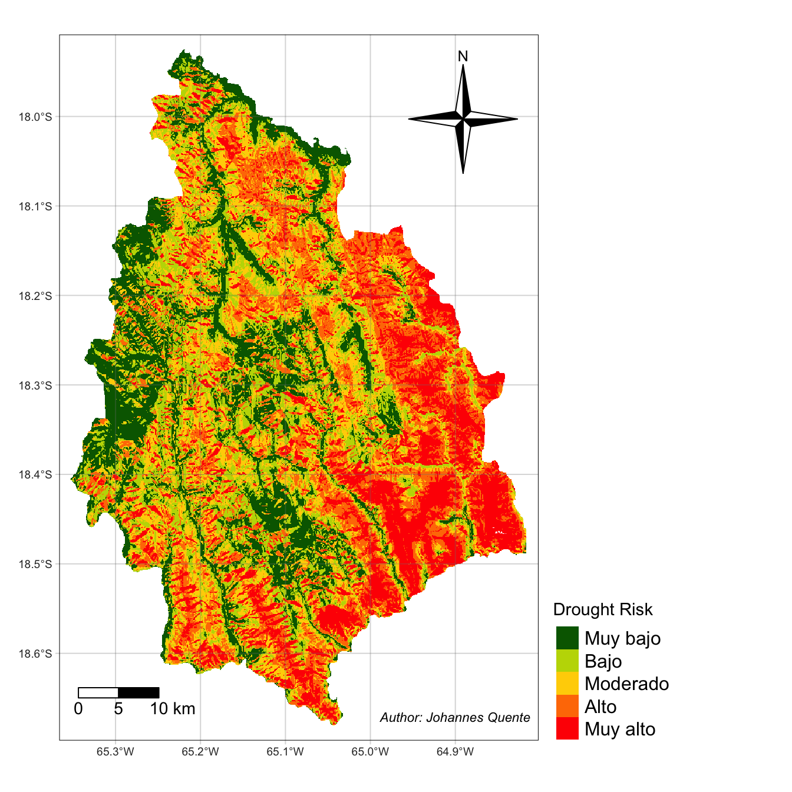